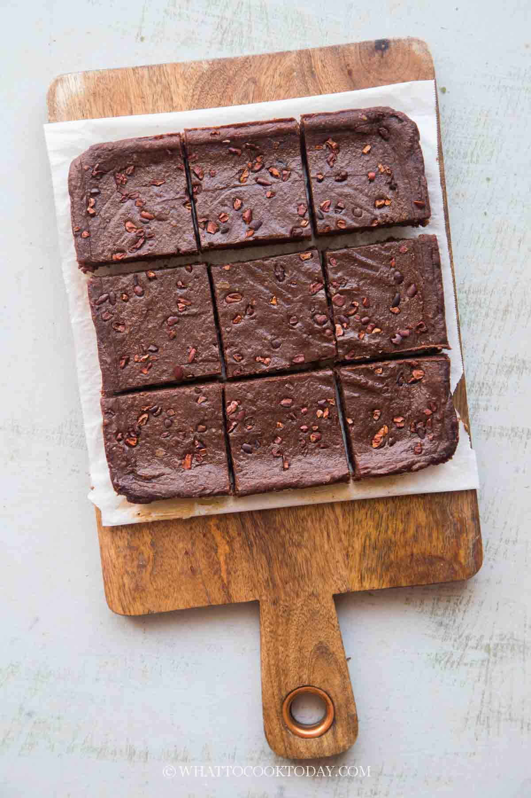

Bean Brownie

Description
This red bean brownie recipe is great as a chocolatey
afternoon snack full of proteins, without sugar or flour.
Ingredients
- 1 cup red beans
- 3 teaspoons Agave sirup
- 200g dark chocolate
- 2 eggs
- 1 teaspoon vanilla extract
- 1 teaspoon baking soda
- 2 teaspoons plant-based milk
Steps
- Strain and rinse the red beans. Place them in a mixer with the plant-based
milk and whizz until smooth.
- To this mixture, add the rest of the ingredients.
- Place in a rectangular cake mould and bake at 180 degrees for half an hour.